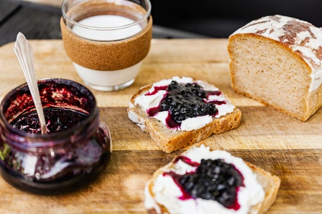
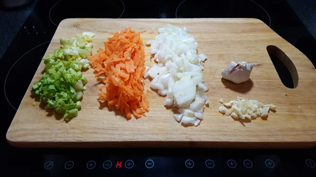

a place where honest wholesome cooking is delivered in every dish
Step into the heart-warming world of Nutty's Kitchen, where the love
for food, flavours and creativity merge to create a culinary
experience that's as heartfelt as it is budget-friendly. Meet Nutty,
a passionate foodie, whose journey in the realm of cooking is as
rich and diverse as the flavours she brings to life.
New Search!
Explore Nutty's Recipes
or
Click ‘Recipes’
in the top menu to search by category, ingredient, or
craving — it’s like flipping through Nutty’s personal cookbook!
Make sure to see her latest recipe near the bottom
of this page.
Cooking on a Budget
Times can be tough when it comes to putting together a good square
meal that is as tasty as you would expect to get in a decent
restaurant. So I hope I bring you some inspiration and know-how in
the pages ahead. The cost of ingredients and cooking is never far
from my mind, so you will find very few lavishly expensive items in
my dishes. Just lots of flavour

budget doesn't mean bread and jam!
Bulking out with veg
Bulking out a dish with veg' is a very old-fashioned way of reducing
costs, but at the same time, a way to add so much flavour! Veg'
haters will never know they are there! Crafty, unless you tell them
of course ;¬)
Throughout my recipes you will find that the base to most
English-style cooking starts with, what is known as, the Holy
Trinity! This is simply carrots, onions and celery, with a little
twist here and there such as adding a little fresh garlic. Taste
starts here!

the holy trinity: carrots, onion, celery
Freeze for another day
Life can be so busy and hectic that sometimes you just want
something super-fast. Every dish I cook will serve more people than
I have to feed! This is my cunning ploy for those days when I just
don't have time to prepare from fresh. You can freeze meal size
portions of all my dishes (unless I specifically say otherwise!) so
you can pull something out of the freezer in the morning, knowing
that you have a delicious dinner waiting for you in just a few
minutes. In fact, you will find that the depth of flavour develops
nicely in most cases which is just another added bonus.
when time is of the essence
who needs a takeaway when you have a ping-away!
Click or tap the pic for the recipe!
Latest
New Recipe!
Check out this page for regular updates. Here I will post my latest
recipe.
I am so excited to give you my
curry leaf masala chicken fry
An absolutely outstanding Indian dish with rich earthy flavours and
a distinct curry leaf aroma. This absolutely knocked our socks off.
Three of us devoured 1kg of chicken in one sitting!
Click or tap the pic for the recipe! You just have to try this :¬)
1 year one hundred recipes!
Well! Doesn't time fly! I can hardly believe that it's a whole year
since I published my first recipes on
Nutty's Kitchen. In that time I've created
one hundred dishes that you can make at home without
breaking the bank!
Spin me:
As a super special treat for one of those big nights in, I've made
my extra special Butter Chicken, which is a
beautiful, rich and fairly delicately spiced curry. Not one to be
eaten on a regular basis mind, as there are quite a few colories
included, but it is oh! So umptious! I do hope you get chance to
enjoy this one with a dinner guest or two. Head over to my
Butter Chicken Recipe
for the full method and ingredients.